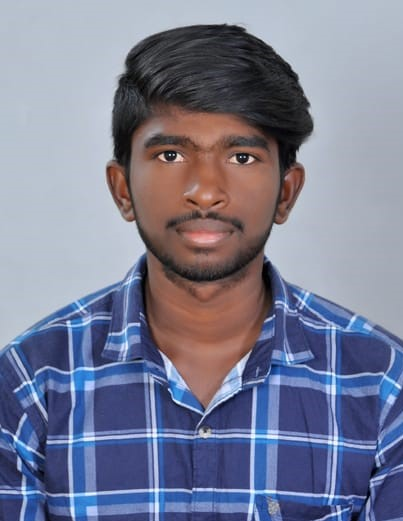

RESUME DETAILS
|
|
| SARANSHREE R |
 |
| BTECH IT |
| NAMAKKAL |
| EMAIL |
:saranshree@gmail.com |
| MOBILE |
:9087509235 |
|
Academic Details
| YEAR |
DEGREE |
INSTITUTE |
PERCENTAGE |
| 2020 |
BTech Information Technology |
Sona College of Technology |
80.15% |
| 2018 |
Class XII |
Bharathi Higher Secondary School |
78.16% |
| 2016 |
Class X |
Bharathi Higher Secondary School |
90.02% |
Objective
- To pursue graduate studies in computer science and engineering, leading to a career in research.
- I am interested in computer vision and machine learning.
- If your career experience is outside the industry you’re currently applying to, an objective statement can clarify your goals and touch on why you’re making the change.
- If you’re planning a move to a new city, your current address may confuse the hiring manager. By noting your plans in your resume objective, you can avoid being disqualified for living out-of-town.
- Accomplished leader in marketing communications seeking a new career path with a nonprofit organization. I am looking for an opportunity where I can use apply my passion for philanthropy and use my professional experience to drive positive change in my community.
Major Projects
-
First project created in my college 2nd year.Creating web page of cricket using html and css .
-
Improving Performance with MKL in SVMs Dr. Manik Varma, MSR India.Dr. Prateek Jain, MSR IndiaSummer Internship and B.Tech Project May 2010 PresentSupport Vector Machines learn linear classiers from labelled training data to predict labels for previously unseen test data. Kernels with SVM's allow to learn non linear classiers, and hence lead to much higher classication accuracies in practice. We are learning non linear kernel combinations to give us even better classication accuracies and are seeing a possibility of a signicant performance increase. Also, looking at new regularizers (which take into account the model complexity) for use in the MKL objective. Working towards submitting this to one of ICML, NIPS or ECCV.
-
Unsupervised Video Surveillance Prof. Subhashis Banerjee, CSE, IITD Student Undergraduate Research Award (SURA - 2009) May 2009 - October 2009 This project involved the development of a novel technique to detect unusual activities in videos in an unsupervised manner. We used pLSA with an appropriate choice for features on video clips to obtain clustering of similar videos, and any new activity dierent from the ones learnt was agged as unusual. We also extended the idea to multi person unusual activity detection.
Other Projects
- Captcha Reader Prof. Prem Kalra Digital. Image Analysis Course Project November 2010.I made a simple captcha reader to read the captcha in use for the institute web mail. It involved letter segmentation and training in a semi supervised manner using a KNN classier.
- Using Structural Information for Object Recognition Prof. Subhashis Banerjee Computer Vision Course Project April 2010 I investigated various feature vectors and techniques and frameworks for incorporating structural information in object recognition tasks.
- Non Photo-realistic Rendering Prof. Prem Kalra Digital Image Analysis Course Project September 2010.Implemented color quantization, dithering, image segmentation and edge enhancement (by edge linking, dierential thickening and smoothing) to give a painterly look to photo-realistic images.
- Knowledge Management Prof. Subhashis Banerjee.Independent Project January 2010 - October 2010.Conceptualized new web 2.0 based IT services such as Interest Group Discussion Forums, Campus Wiki, Project Database to allow easier collaboration, better information organization and formalizing undocumented technical know how. Designed intuitive user interfaces and workows for these services and customized existing open source drupal and foswiki project (by adding kerberos authentication, LDAP integration), tonally deploy these services in the institute.
- Funny Cell Assistant Prof. Aaditeshwar Seth.Computer Networks Course Project March 2010 - April 2010 .This project was based on a molecule based inter-cell communication simulator designed by our professor.We designed and analyzed robust communication protocols for inter cell molecular communication among antibody cells in a loss full unreliable medium. Also designed combat strategies against infection cells.
Conferences/Workshops Attended
-
Research Intern at Microsoft Research India, Bangalore in the Vision Graphics and Visualization.Group and worked with Manik Varma and Prateek Jain.
- Attended the 2010 Winter School on Machine Learning and Computer Vision organized by IISc Bangalore with Microsoft Research(MSR) and Canadian Institute for Advanced Research (CIFAR)featuring lectures by researchers such as Jitendra Malik, William Freeman, Yair Weiss, Brendan Frey and Martin Wainwright.
- Attended the Special Interest Groups in Communications (SIGCOMM) Conference, 2010. Will attend the Seventh Indian Conference on Computer Vision, Graphics and Image Processing(ICVGIP).
- Will attend the 3rd Microsoft Research India Computer Vision and Graphics Shindig.
Relevant Courses
-
Computer Science: Computer Vision, Digital Image Analysis, Approximation Algorithms, Numerical and Scientic Computing, Parallel Programming, Computer Networks, Operating Systems, Theory Of Computation, Analysis and Design of Algorithms, Programming Languages, Digital Hardware Design, Computer Architecture, Discrete Mathematical Structures, Data Structures, ICTs for Development.
- Mathematics: Graph Theory, Numerical Optimization, Statistical Methods and Algorithms, Probability Theory, Stochastic Process, Real Analysis, Dierential Equations, Linear Algebra, Matrix Theory.
-
Courses to be done in Spring 2011.
Computer Skills
- Programming Languages: Java, C/C++, Perl, Python.
- Interested languages: SML, Lex, Yacc, Prolog, PHP, MySQL, JavaScript, VHDL, MIPS32 (Assembly Language).
- Software Packages: Matlab, OpenCV, Xilinx, Latex, Doxygen.
- Platforms: Linux and Windows.
- Operating system - Windows XP ,Windows 7.
Position Of Responsibility
- Member of the department System Administrator team since May 2009. Maintain over 100 clients, 10 servers and around 15 IT services, like authentication, mailing, directory service, internet access, course management, remote client management.
- Served as a Student Mentor for the CSE Department First Year Students. Helped them get acquainted
with the college studies and environment.
- Spend only about 20 percent of your resume talking about duties and responsibilities for each job. The rest of your resume should highlight specific achievements.
- Evaluated backup procedures and disaster recovery procedures. Implemented corrections to procedures to ensure recovery.
References
- Manik Varma, Researcher, Vision Graphics and Visualisation Group, Microsoft Research India, +91-080-66586000, manik@microsoft.com.
- Subhashis Banerjee, Professor, Department of Computer Science and Engineering, Indian Institute of Technology Delhi, +91-011-26591288, suban@cse.iitd.ernet.in.
- Prateek Jain, Associate Researcher, Algorithms Research Group, Microsoft Research India, +91-080-66586000, prajain@microsoft.com.